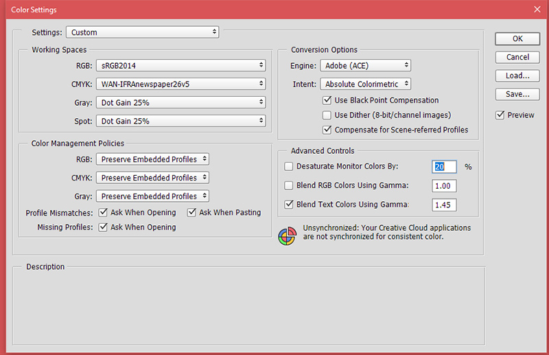
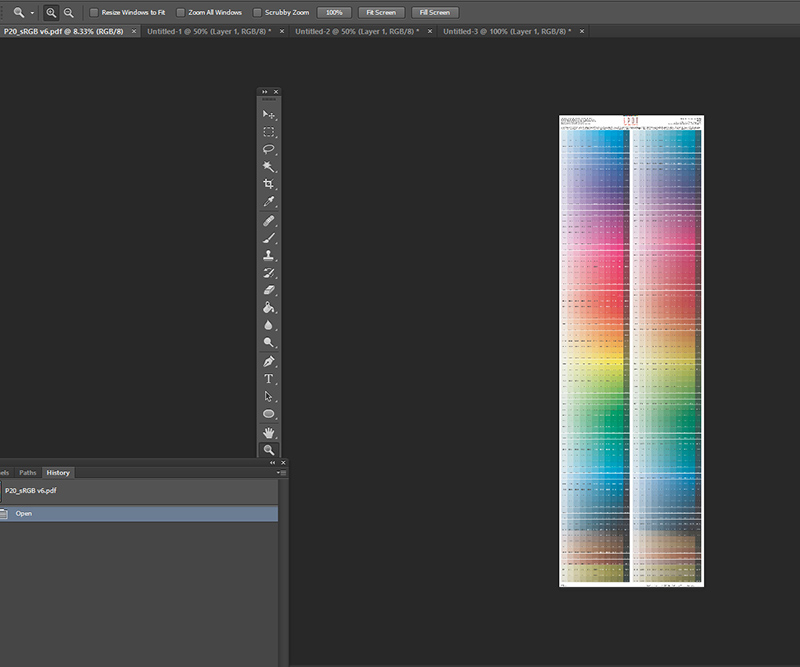
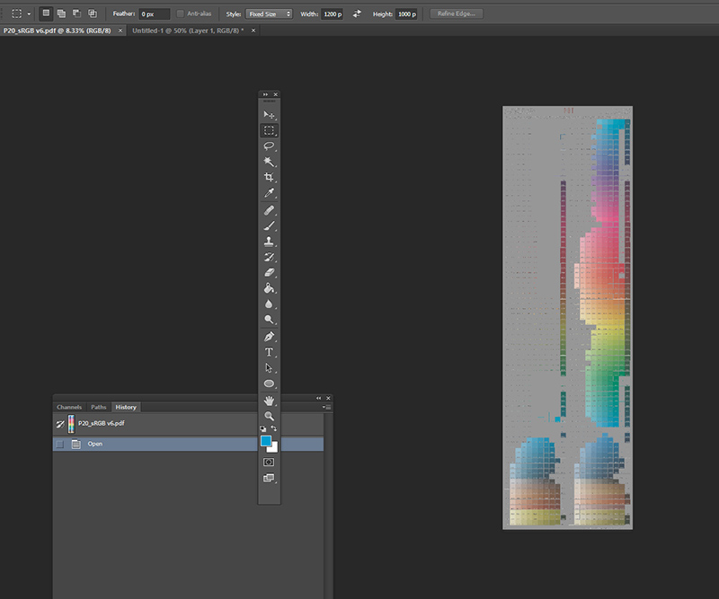
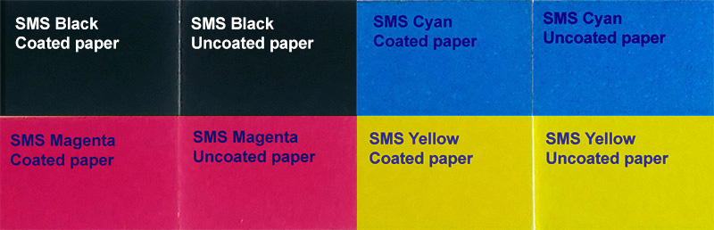
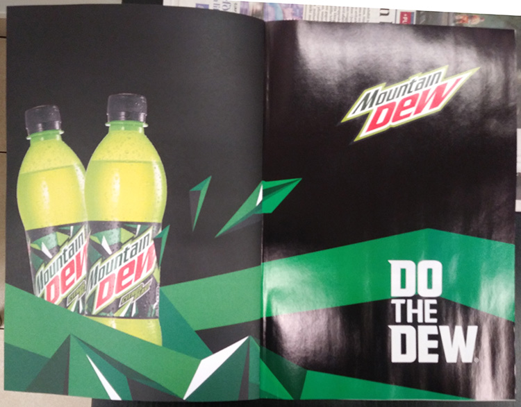
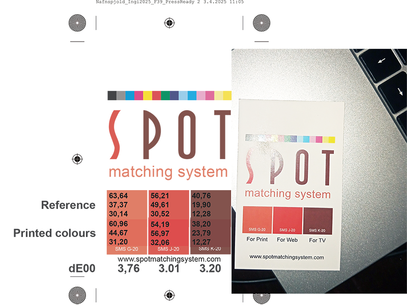
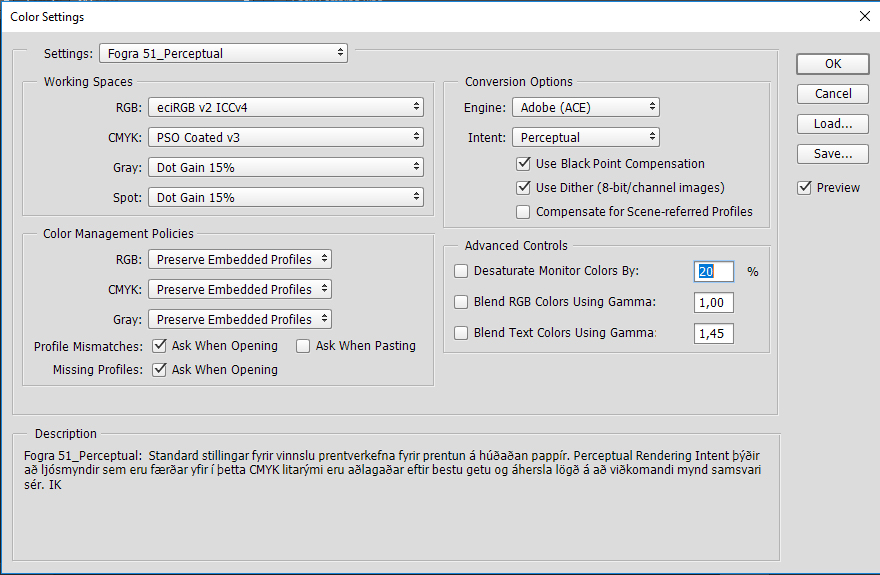
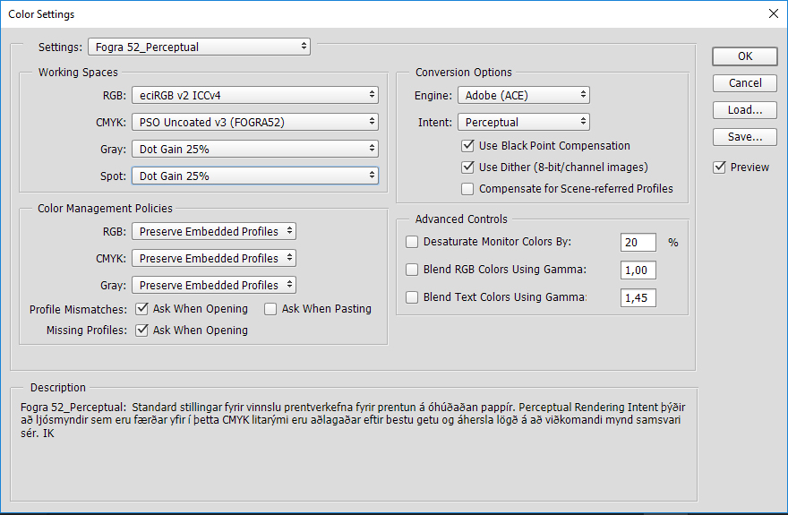
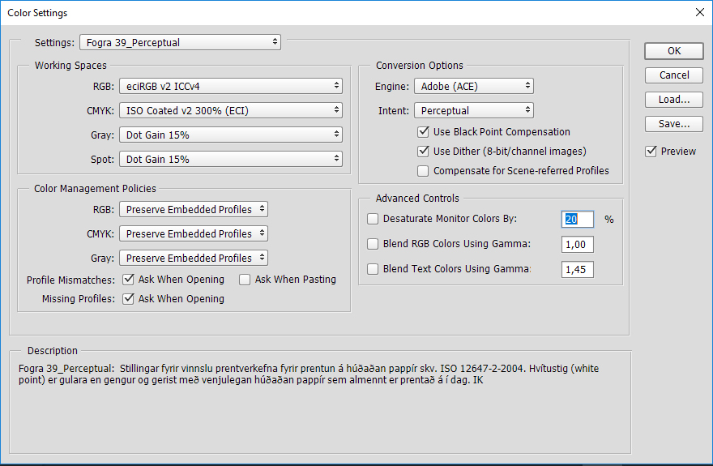
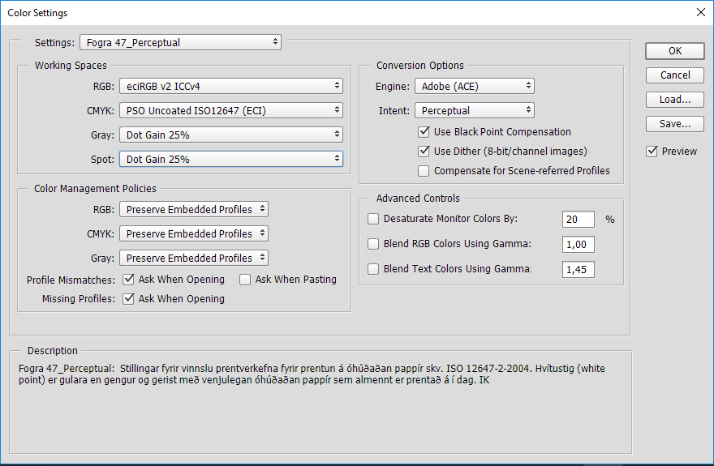

Shop SMS SMS Technical SMS products & services SMS in articles and webinars Testimonies
SMS and the environment SMS news SMS READY Experts Interesting links SMS: How, why and when SMS Q&A
|
SMS for design and
advertising Getting started with SMS colours SMS BLOCKS Cost of ownership |
SMS for print Printers (in all categories) SMS READY - or not? |
SMS technical details
SMS colours are hand picked colours from the CMYK colour gamut for CMYK printing in accordance with the international standard ISO 12647-2.
Each Standard and ECO SMS colour is adapted to look identical
colourwise when printed on coated and uncoated paper, which again
means that the CMYK composition of the SMS colour for coated paper is
never the same as it is for uncoated paper.
SMS colours are made from the ground up be achieved in 4 colour (CMYK) printing for newspapers (ECO version), magazines, business cards, posters, brochures, leaflets etc. etc.,- analog (offset, gravure, flexo) or digital printing.
SMS colours can be:
-
Hard proofed (printed proof) and certified according to ISO 12647-7-2016.
-
Viewed correctly online on native sRGB monitors and smart devices - in their sRGB version (P20, P20e, P20x) or optionally the newer P3 colourspace (requires manual conversion from sRGB to P3 - see instructions on how to do this here). The recent SMS Standard (P20o) and MAX Home & Office (P20xo) as well as the ECO colour palette can be correctly viewed on cheaper PC laptop displays that are only capable of displaying approx. 60% of the sRGB gamut.
-
Viewed correctly on Television (Rec. 709 RGB) in their Rec. 709 version + are future proof for Rec. 2020 (P20, P20e, P20x, P20sx).
You can actually make good SMS colour decisions on your smartphone and it is safe for designers to present their SMS designs to customers online for approval as a first step. If the colours look right online, they should look almost identical in printing.
Demanding, colour concious SMS users and customers should make sure they are viewing their SMS colours on a calibrated sRGB capable display. Good monitor calibration solutions typically cost approx. EUR 2-300 or so - for instance Calibrite or Spyder, which are both good choices to keep your display correct with a scheduled calibration once per week (this takes a few minutes).
Spot-Nordic offers a good variety of calibrators and other hardware and software for demanding customers at https://www.spot-nordic.com/qc.
However, if you are developing a new brand, that is supposed to be used in the coming years, we recommend the final decision to be made based on our certified SMS colour tickets - see details here.

For professional users, it should be made clear that the LAB value of the sRGB colour is always the target colour = the reference and for production the LAB value of a 0/45 spectrophotometer - for instance the SMS READY TECHKON SpectroDens instrument, should always be brought as close to the master LAB value as possible.
The SMS Standard v6 library is available for the SpectroDens Advanced and Premium instrument for easy SMS matching in production.
We also recently added the SMS Standard v6 library to the inexpensive
but handy ColorMeter Exact which is perfect for quality control for
designers and quality managers - see details
here.
SMS users can furthermore always check the master LAB value of any SMS
colour, simply be opening their SMS colour palette in Photoshop and
using the eyedropper to pull up the LAB value of the colour.
Hardproofs - SMS colour tickets, that can be ordered from Spot-Nordic,
are always a good idea to match physical colours visually before and
during production, if only to ensure that the correct SMS colours are
being printed/applied.
Professional users of SMS colours that wish to rely primarily on their screen to select SMS colours, should consider investing in a screen calibrator + software - for instance the Calibrite or Spyder calibrators that cost typically 150 - 300 Euros or so.
Since SMS colours are delivered in standard sRGB, the display only has to be able to display 100% sRGB - something that is quite common, even for less expensive monitors and even smartphones and tablets.
Thus SMS users that don't have a screen calibrator, should simply select
sRGB as their display profile.
Users that do have a calibrator should simply calibrate their monitor
and create a customer monitor profile, which should then be updated
approx. once per week.
If the gamut of the display covers the gamut of sRGB (100% sRGB), the
colours will be correct on the display.
The proposed approach for designing with SMS colours is that the user should
finish his or her job first in sRGB (web) format, get the approval of
the customer and then move on to creating the print version(s) of the
job - see
www.spotmatchingsystem.com/gettingstarted.
This does not mean that professional users should not also use for instance Adobe RGB when preparing jobs that contains Adobe RGB images. If your monitor covers Adobe RGB, set your RGB in your app to Adobe RGB and the images should look correct.
Just make sure that your SMS colours are converted to CMYK BEFORE you start working in Adobe RGB to place your Adobe RGB images etc. As soon as your SMS colours have been converted to CMYK, the RGB colourspace is no longer of concern and the final outcome of your SMS colours is set - even if your final document is set to Adobe RGB and is full of Adobe RGB images.
When you safe your master PDF be sure to check "Leave CMYK unchanged". This will enable your printer to convert the Adobe RGB images to CMYK, anyway they see fit, - but they will print the SMS CMYK colours as they are.
Some users prefer to leave the conversion from RGB to CMYK to their printer. We don't recommend this. We recommend that professional users convert their Adobe RGB or sRGB images - all RGB elements to the final CMYK destination.
That way they have total control over what the print SHOULD look like and some tweaks can be made to the final CMYK elements by the designer. In this case just make sure to safe a copy of the RGB version for yourself, - in case you need to print the job on a different type of paper later.
And no matter which method you prefer - we strongly recommend to embed the destination CMYK profile with your master PDF. This is what tells your printer what paper they should print on - and which output curves they should use when they output the job to plate - or print it (in the case of digital presses), even if they strip it off before they output the file to plate.
Papertypes and printing standards:
There are two factors that determine the final outcome of colours:
1) The paper / substrate type
If you are preparing a job, you need to select the paper or substrate you want your job printed on. Don't leave it to your Printer to "pick something good". The white point of the chosen paper/substrate affects your colours and so does the nature of the substrate (coated, uncoated, something in between...).
Here, again it is easiest to stick to the standards.
Printing on coated paper / smooth/closed surface.
If you want to print on smooth and mostly closed surface, for instance
coated paper, check with your supplier if the paper/substrate has a
white point in accordance with Fogra 39 or Fogra 51.
The difference is
that paper that is correct according to Fogra 39 is slightly more
neutral than paper that is correct according to Fogra 51.
Paper manufacturers would describe a substrate that has the correct white point
according to Fogra 51 as "brighter".
In fact it is slightly more bluish/colder, when you look at it in
daylight - which will consequently make your colours slightly
bluish/colder.
If you measure the paper yourself, for Fogra 39 compliant substrate, the LAB value should be approx. 95, 0, -2 when you measure with the condition M1 (D50/2°).
A good rule when doing this is to also measure the paper with condition
M2.
The M2 condition cuts out the UV in the light of the spectral
instrument. If the LAB value is considerably different, - say if the *b
value jumps towards minus when you measure with the M1 condition, that
means that the paper contains a considerable amount of optical
brighteners and is probably more appropriate for printing to Fogra 51
than Fogra 39.
If the values remain just about the same, the paper doesn't contain a
lot of optical brighteners and the paper is appropriate for printing to
Fogra 39. In fact the LAB value when measured with condition M0
should not be very different in this case.
M1 means that your instrument measures the white point of your paper,
including the part of the spectrum that
so-called optical brighteners affect. Optical brighteners are
commonly added to make the paper/material/substrate seem brighter.
The older M0 standard does not pick those brighteners up and
consequently M0 instruments don't actually "see" the actual colour of the
paper, - the same way your eyes do, unless you only look at your job
under an old 40w lamp in your living room, which is typically not the
target - again although there may be exceptions, for instance if your
job will be displayed in a museum.
For Fogra 51 compliant substrate, the M1 LAB value should be approx. 95, 2, -6.
Printing on uncoated paper/absorbant substrate
If you plan to print your job on uncoated paper/ink absorbant substrate, check with your paper supplier if the paper has a white point according to Fogra 47 or Fogra 52. The same applies. The Fogra 52 paper is brighter/more bluish than the Fogra 47 compliant paper.
The white point appropriate for Fogra 47 compliant paper is the same as for Fogra 39, - approx. 95, 0, -2 , while the Fogra 52 compliant white point is approx. 93, 3, -10.
Use the same approach to check the paper for optical brighteners as for the coated paper.
In general
Originally (in 2018), the Spot Matching System was based at it's origin on the white points of current Fogra 51 and Fogra 52. We assumed that most customers would prefer brighter paper since that has been the trend from the dawn of time.
However in 2024, with version 6 of our colour palettes, we decided to
normalize our Standard and MAX colour palettes to the older Fogra 39 and
Fogra 47 standards that are more neutral than the newer Fogra 51 and
Fogra 52. At the same time we "tweaked" our colours to bring them even
closer visually when converting from sRGB to CMYK than they were before.
The difference in colour on a colour to colour basis is neglegible, so
users with our older version 5 will not be able to notice the
difference.
The reason we decided to take a step back is the fact that most printers did not take the step to upgrade from ISO 12647-2-2004/AMD 2007 to ISO 12647-2-2013. To this day they continue to print according to Fogra 39 and Fogra 47, measuring the colours with their older spectral instruments using the M0 standard, whether they are printing on paper that contains optical brighteners or not.
Another reason for this step backwards is the fact that LED lighting is becoming the universal standard in lighting and LED lights typically do not contain any UV to speak off - meaning that "typical" print jobs are evaluated under lights that do not trigger the optical brighteners in the paper, - so technically speaking, even if the printer uses bright, white paper, containing optical brighteners that will turn blue, when triggered by the UV in normal daylight, if the jobs are printed for inside use, the colours will appear correct to most customers and their customers.
In fact it is safe to use for instance the Fogra 39 icc profile for printing on paper that is optimal for Fogra 51, if you assume that the colours will only be evaluated indoors with lighting not containing UV - for instance normal indoor LED lighting.
If you prefer stability in colour regardless of lighting (indoor v.s. outdoor), your best option is to pick paper that contains little or no optical brighteners, - paper that is appropriate for printing to Fogra 39, in the case of coated paper and Fogra 47 in the case of uncoated paper.
There are of course more print standards that you can choose from that the ones we described here above - see the list of supported icc profiles for each SMS colour palette (Standard, ECO, MAX).
2) The print standards of your Printer - to be studied before you start preparing your print job.
To be in full control of your SMS colours from design to print, you need to know the CMYK printing standards of your Printer - each print shop, if you are working with more than one.
Some print shops will simply offer printing to standards - Fogra standards or G7 standards. That means you can safely use the standard icc profiles. SMS users can request a copy of the standard icc profiles from Spot-Nordic when they order their P20 colour palette(s).
If however your printer prefers to provide you with "their own" CMYK icc profiles, that is fine in most cases, even if that may cost you a bit of extra work - converting your SMS layouts to each custom icc profile, and making sure that it is saved only for printing at this print shop.
In this case, the printer has gone through the trouble of creating a
custom CMYK icc profile, based on the physical output of his printing
presses, to keep the colours as correct as possible. This is usually
called "fingerprinting" a press.
Just be sure to ask your printer what each of their customer profiles is
for.
Each such profile should apply to one of the standard icc profiles. As long as the gamut of the custom profiles is large enough, simply use the custom CMYK profile instead of the standard CMYK profile and convert to that CMYK profile, instead of the standard profile we recommend in the step-by-step training.
Just remember that this CMYK profile only applies when you are printing at this print shop, not other print shops you use.
For SMS users that have Photoshop or Affinity software, there is a simple way to check if their print shop can print their SMS colours using their custom icc profiles that they provide for their customers.
In our example we are going to check if it might be possible to print our Standard colours (v6) in our local newspaper. Please keep in mind that not all of the Standard colours need to pass, - just the SMS colours you are using for the customer in question:
We are using an older version of Photoshop in our case:
1. Open Photoshop, set your RGB to sRGB and your CMYK to the icc profile you want to check - in our case our local newspaper uses the standard WAN-IFRA icc profile (ISO 12647-3):

2. Open your Standard v6 colour palette.

3. Go to "View" and make sure that the Proof Setup is set to "Working CMYK". Check "Gamut Warning".

As you can see, most of the Standard colours can not be printed in our local newspaper. However, if you are lucky enough to have picked some of the colours that are not grayed out, those colours will print correctly.
This was of course an extreme example, just to show how to check which colours are in gamut and which are not.
In the case where your print shop provides you with a custom icc CMYK profile and tell you that you should use it for printing according to for instance Fogra 39, ALL SMS colours (whether they are Standard, ECO or MAX) should be in gamut. If some are not in gamut, that means that the printing press of the print shop is not capable of printing to Fogra 39 standards.
That will affect both your SMS colours, as well as photographs within your layout.
* * *
DeltaE2000 (dE00) is the standard used in the current ISO 12647-2-2013 and
related standards to define colour difference.
In print - and even for proofing, a DeltaE2000 of 3 is considered
"reasonable" and a DeltaE2000 of 2 or less is usually considered very
good where the colour difference is not visible to the average person,
even when comparing sample and reference side-by-side.
As of version 6 (released in May 2024 - see www.spotmatchingsystem.com/news, the actual DE2000 between SMS CMYK colours printed on coated paper and the same colours printed on uncoated paper - or in fact if the colours are converted to any of the supported icc profiles for the respective colour palette (see supported colour spaces here) is typically less than 0.2 - or even 0 in many cases, - which in other words means that the visual colour difference between SMS colours printed on coated paper and uncoated paper should never be detectable by the human eye.
If there is a colour difference, this will be due to technical problems
at the print shop.
The only thing that is different is that there is a slight reflection of
the light in the case of the coated paper, while there is no reflection
in the case of the uncoated paper.

SMS primary colours. Coated and uncoated paper. Composed photograph of our ISO certified (printed) proofs side by side for printing in accordance with ISO 12647-2-2013.
Standard version 6 (1.738 colours) - difference between SMS colours printed on coated and uncoated paper.
| Delta E2000 | |
| Average | 0,05 |
| Max | 0,2 |
For comparison the average DeltaE2000 of printed primary and secondary process (CMYK) colours according to the ISO 12647-2-2013 target values between coated paper (CD1 Premium Coated) and uncoated paper (CD5 Woodfree, uncoated) is over 8.

Normal process colours. Picture of coated and
uncoated CMYK colour guides from Pantone, printed in accordance with ISO
12647-2.
Standard CMYK colours, difference between printing on coated and uncoated paper:
| Delta E2000 | |
| Average | 8,37 |
| Max | 12,47 |
To put this into perspective.
Lets just say that we have a job and we need to use both coated and uncoated paper. Lets select the common paper types for Fogra 51 and Fogra 52 (neutral, white paper, with optical brighteners, for outdoor viewing).
If you use SMS Cyan (J-1) and hit your target perfectly in your print process, you get a DeltaE2000 of, the DeltaE2000 between the coated and uncoated version.
If you use 100% process Cyan as you colour for printing on coated and uncoated paper, the DeltaE2000 should be 5,62.
If you use SMS Magenta (J-13) and hit your target perfectly in your print process, you get a DeltaE2000 of 0 between the coated and uncoated version.
If you pick 100% process Magenta as your colour for both coated and uncoated paper, the DeltaE2000 will be approx. 8.
This gets really painful if you compare SMS Process black to standard process black (K).
If you use for instance SMS J-42 as your black and hit the target perfectly in your print process, you get a DeltaE2000 difference of 0 between the coated and the uncoated version.
If you use 100% standard K and hit the target perfectly in your print process you get a DeltaE2000 difference in colour between the coated and uncoated version of 12,47!
This is not a criticism on the ISO 12647-2-2013 standard and not at all
on my friends at Pantone LLC.
This is simply because the same CMYK % are used for printing on coated and
uncoated paper, - same classic syndrome, making the life of the designer
hard, that comes up when the same inks or the same CMYK % are used for
printing on different substrates, which is discussed further
here.
If in doubt, the easiest way to see this for yourself is to look up the primary process inks in your Pantone CMYK guides and compare the coated and uncoated version, side by side.
So in conclusion, if you are planning to use both coated and uncoated paper for CMYK printing of your design, we recommend using our SMS colours, rather than fixed process variations.

A spread from a random magazine. The cover of the magazine is uncoated paper, the inside of the magazine gloss coated paper.
-------------------------------------------------------------------------------------------------
Settings and job procedure where SMS colours are in use - for print shops first and foremost.
As of version 6 of the Spot Matching System, the colours are optimized for printing to Fogra 39 (ISO Coated v2) and Fogra 47 (PSO Uncoated v2 - although all SMS colours can also be reproduced very well using the newer standard, - Fogra 51, Fogra 52 or G7 CRPC3 and CRPC6 for instance.
This is the first major upgrade to the system, and what we did was to
"tweak" the existing colours to bring colour fluctuations when moving
from one colourspace to the next to an absolute minimum.
We also added two new, quite popular colour standards to the list of
supported icc profiles - the GRACoL2006 (Coated) and the Japan Color
2011 (Coated).
A list of supported standard icc profiles for each SMS colour palette as of version 7 can be viewed here.
Print shops in all categories that wish to get formally certified for
printing SMS colours need to be able to
receive and
output PDF documents set up for
printing according to at least one of the standards listed to be
considered SMS READY - see more information about the SMS READY
certification here.
Print shops are allowed,
at their own discretion, to convert the documents to an inhouse output
standard but the final print has to be in full accordance with this standard.
To make sure your Printer is up to the task of printing SMS colours correctly, you need to ask them to which print standards they print - a good idea would be to send them the list of icc profiles that enable printing of SMS colours.
If they are able to list at least a few standards they athere to, they should
also be able to print any SMS colour you
throw at them, prepared to one or more of their standards.
It is a good idea to suggest to your Printer that they
suscribe to SMS and familiarize themselves with the Spot Matching System
colour palette.
We have prepared free test forms that we are happy to provide them with to check if they need to make adjustments in their workflow to be, what we call, SMS READY - see top of the page.
In general, print shops that are PSO certified (Process Standard Offset) by Fogra or Ugra as well as G7 Master Facilities certified by Idealliance should be a safer choice for printing SMS colours correctly.
Printers that are not certified might want to consider contacting one of the organizations
listed here above for assistance and advice. Getting your colours under
control is easier and less expensive than you probably imagine.
Brand owners, Advertising Agencies/freelance designers and Print Shops may
subscribe to SMS right here on our site.
First read all about the advantages of subscribing to SMS at
https://www.spot-nordic.com/sms/services.
If there is not an SMS READY print shop near you, they will still most likely be able to print SMS colours with reasonably good accuracy, since most professional print shops aim to print to industry standards, even if they are not willing to pay for formal certifications, by Fogra, Printing United or Spot-Nordic (for the SMS READY certification).
Our own blind tests indicate this. For instance, here is the result from our last printing of business cards, conducted by a print shop in Iceland. The cards were printed on a digital press and the printer requested them in Fogra 39, CMYK format.

A dE00 of 3.76 is not great, but it is not the end of the world either and with slight tweaking this printing press could easily print to ISO 12647 and to our SMS READY standards as well, - i.e. bring their dE00 below 3.
When printing SMS colours in CMYK the general rule is that they are
resistant to varnishing and coatings (oil based, waterbased and UV
based) and lamination should in general not be a problem, since the
colours are printed with standard process inks.
Settings for CMYK printing:
SMS colours for CMYK printing are delivered as CMYK halftones, based on the output and papertype to be used. You need to make clear to your print shop that CMYK colours in your document should be printed as they are - i.e. they should not be converted without checking with us first. This should not be a problem in most cases since typically only RGB colours within a document are by default converted to the destination CMYK output (and CMYK colours left as they are).
If you wish to order your CMYK colours from Spot-Nordic (v.s. preparing them yourself), in order for us to be able to prepare a CMYK colour variant, normally all we need to know is the destination CMYK icc profile.
If we only get the CMYK icc profile, we will assume that the white point and the type of paper as well as the print standard of your Printer is in accordance with that CMYK icc profile. If there is a twist - let's say if the white point of your chosen paper is closer to Fogra 51 but your print shop is printing according to Fogra 39, then you need to inform us of that when you order, otherwise the final colour will not be as close to perfection as we want it to be.
In this scenario for instance the final colour will be slightly more bluish than the original SMS colour you picked if you simply order the Fogra 39 version of it.
ISO 12647-2-2013: Fogra 51 (bright, white coated paper containing optical brighteners)
If you are preparing a job for CMYK printing on coated paper according to Fogra 51, order or prepare your SMS colours acc. to Fogra 51.
For this purpose we recommend the following settings:

Relative Colorimetric rendering intent is also ok and if you prefer to use Adobe RGB, that is also fine.
ISO 12647-2-2013: Fogra 52 (uncoated, bright, white paper containing optical brighteners)
If you are preparing a job for CMYK printing on uncoated paper according to Fogra 52, order or prepare SMS colours acc. to Fogra 52.
In this case we recommend the following settings:

Relative Colorimetric rendering intent is also ok and if you prefer to use Adobe RGB, that is also fine.
ISO 12647-2-2004/AMD 2007: Fogra 39 (coated paper, not containing optical brighteners)
If you are preparing a job for CMYK printing on coated paper according to FOGRA39, be sure to order - or prepare yourself SMS colours acc. to Fogra 39.
For these purposes we recommend the following settings:

Relative Colorimetric rendering intent is also ok and if you prefer to use Adobe RGB, that is also fine.
ISO 12647-2-2004/AMD 2007: Fogra 47 (uncoated paper, not containing opticial brighteners)
If you are preparing a job for CMYK printing according to FOGRA47, make sure to order, - or prepare yourself SMS colours acc. to Fogra 47.
We recommend the following settings.

Relative Colorimetric rendering intent is also ok and if you prefer to use Adobe RGB, that is also fine:
Use default settings provided by Idealliance if you are printing to GRACoL standards. SMS colours are available for CMYK printing to CRPC3 and CRPC6.
Registered SMS users and SMS subscribers may also contact
support@spotmatchingsystem.com and request
settings and icc profiles appropriate for their work.
Please contact support@spotmatchingsystem.com if you have questions.
Shop SMS SMS Technical SMS products & services SMS in articles and webinars Testimonies
SMS and the environment SMS news SMS READY Experts Interesting links SMS: How, why and when SMS Q&A
|
SMS for design and
advertising Getting started with SMS colours SMS BLOCKS |
SMS for print Printers (in all categories) SMS test forms |